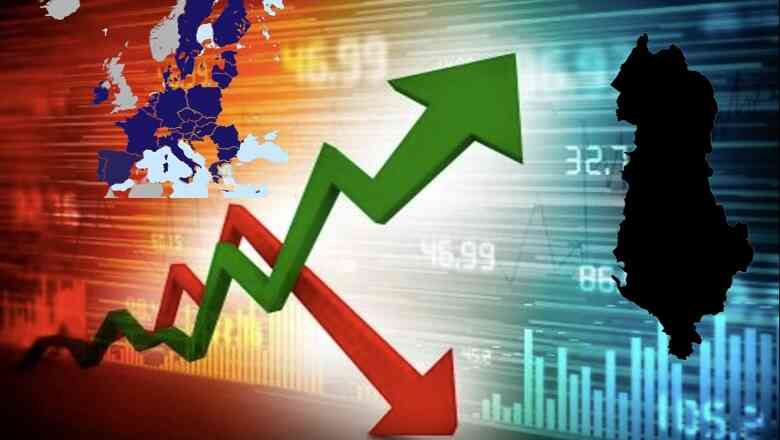

Aktualitet
Kriza e refugjateve
Kriza e refugjatëve është një sfidë e madhe në ditët e sotme. Refugjatët largohen nga vendet e tyre për shkak të konflikteve, luftërave, persekutimeve, shkatërrimeve natyrore ose rrezikshme. Ata kërkojnë strehim dhe mbrojtje në vende të tjera për të ndërtuar një jetë të re. Në kohët moderne, ka pasur një rritje të numrit të refugjatëve, veçanërisht në Europë, si rezultat i konflikteve dhe shkatërrimeve natyrore. Kriza e refugjatëve ka sjellë sfida të mëdha, si kapaciteti i pritjes, integrimi dhe diversiteti kulturor, legaliteti dhe siguria, si dhe mungesa e solidaritetit ndërkombëtar. Për të zgjidhur këto sfida, është e nevojshme që komuniteti ndërkombëtar dhe vendet pritëse të bashkëpunojnë për të ndarë përgjegjësitë, të ofrojnë ndihmë humanitare dhe të sigurojnë rrugë legale dhe të sigurta për refugjatët.
Covid-19

Pandemia COVID-19 pati ndikim të rëndësishëm në Shqipëri: Shëndetësia: Pandemia sfidoi sistemin shëndetësor shqiptar, me rritjen e rasteve të infeksionit dhe presionin në spitale. Ekonomia: Shqipëria përjetoi rrënie të fortë ekonomike si pasojë e masave parandaluese. Shumë sektorë, si turizmi, restorantet, hotelieria dhe transporti, u goditën rëndë. Masa kufizuese: Qeveria ndërmerri masa të ndryshme për të frenuar përhapjen e virusit, duke përfshirë mbylljen e shkollave, ndalimin e aktiviteteve publike, kufizimin e lëvizjes dhe mbylljen e kufijve. Ndihma ekonomike: Qeveria ndërmori masa për të ndihmuar bizneset dhe familjet e prekura nga pandemia, duke ofruar mbështetje financiare dhe lehtësira tatimore për të zvogëluar pasojat negative. Vaksinimi: Nisur nga fundi i vitit 2020, Shqipëria zhvilloi fushatën e vaksinimit kundër COVID-19. Qeveria siguroi vaksina dhe organizoi qendrat e vaksinimit në të gjithë vendin.
Kriza Boterore
Viti 2023 paralajmërohet të jetë një vit i vështirë për Shqipërinë me sfida të shumta. Problematikat e vitit të kaluar do të vazhdojnë të ndikojnë, si pasojë e luftës në Ukrainë dhe goditjeve të brendshme. Qeveria do të përballë sfida të mëdha në të ardhmen. Sfida 1 për qeverinë është të ndihmojë familjet e varfra që do të preken nga kriza e çmimeve dhe të stimulojë konsumin për të rritur ekonominë. Kriza e interesave është një sfidë tjetër që do të shtohet këtë vit. Banka e Shqipërisë ka ndërmarë masat për të frenuar rritjen e inflacionit duke rritur normën bazë të interesit për lekun. Po ashtu, Banka Qendrore Europiane ka rritur normën bazë të interesit për euron. Kjo politikë shtrënguese vështirëson kushtet për kredinë. Sfida 2 për qeverinë është të ndihmojë biznesin dhe sektorët prioritarë për të rritur ekonominë. Ndërkaq, sfida e tretë është mungesa e fuqisë punëtore për shkak të emigracionit të lartë. Kjo mungesë punonjësish prek sektorët e prodhimit, shërbimeve, tregtisë, duke krijuar vështirësi reale për bizneset Qeveria duhet të gjejë politika dhe masat e duhura për të adresuar këto sfida dhe për të ndikuar pozitivisht në tregun e punës, duke përfshirë politika të fokusuar në zhvillimin e forcës punëtore dhe në ndihmën për bizneset e prekura nga kushtet e vështira në tregjet ndërkombëtare.
Inflacioni në Shqipëri
Viti 2023 pritet të sjellë rritje ekonomike dhe stabilitet financiar, duke treguar një rënie të inflacionit në fund të vitit të kaluar. Rënia e inflacionit ka pasur një ndikim pozitiv në çmimin e naftës, ndërsa rritja ekonomike në tre muajt e fundit të vitit 2022 ka sjellë më shumë punësim dhe rritje të pagave. Inflacioni kishte kulmuar në nivelin 8.3% në tetor, por më pas u zvogëlua në 7.4% në fund të vitit. Megjithatë, norma e inflacionit në shërbime dhe artikuj të tjerë mbeti në nivele të larta. Rënia e inflacionit ka reflektuar zvogëlimin e inflacionit të importuar, por presionet inflacioniste vazhdojnë të jenë të pranishme. Rritja ekonomike është përshpejtuar dhe ka shoqëruar rritje të punësimit dhe pagave. Punësimit iu rrit me 4.2%, shkalla e papunësisë u zvogëlua në nivelin më të ulët historik prej 10.6%, ndërsa paga mesatare në sektorin privat u rrit me 12.3%. Normat e interesit dhe kreditet bankare janë rritur si rezultat i normalizimit të politikës monetare në Shqipëri dhe në nivel global. Parashikimet sugjerojnë se inflacioni do të vazhdojë të zbresë gradualisht gjatë vitit 2023 dhe do të kthehet në objektiv në gjysmën e parë të vitit 2024. Ekonomia shqiptare pritet të vazhdojë të rritet dhe treguesit financiarë të mbeten nën kontroll. Niveli i inflacionit ishte 7.1%, duke vijuar trendin zvogëllues nga 7.4% në vitin e kaluar. Kjo zhvillim i inflacionit duket të jetë ndikuar edhe nga situata në Eurozonë, ku edhe atje inflacioni ka treguar një trend zvogëllues, pasi një pjesë e mirë e inflacionit në Shqipëri është i importuar. Inflacioni pritet të vazhdojë të ulet gjatë këtij viti dhe të kthehet nën 3% në fillim të vitit 2024.
Lufta midis Rusisë dhe Ukrainës
Lufta midis Rusisë dhe Ukrainës ka pasur disa ndikime në Shqipëri, në mënyrë të drejtpërdrejtë dhe të ndërkëmbët me ndikimin global. Disa nga ndikimet kryesore janë: 1. Siguria dhe politika e jashtme: Konflikti në Ukrainë ka ndikuar në rritjen e tensioneve në rajonin e Ballkanit. Shqipëria është vend anëtar i NATO-s dhe ka përkrahur përpjekjet e Ukrainës për të ruajtur sovranitetin dhe integritetin territorial. Për shkak të angazhimit të NATO-s në konflikt, situata ka pasur ndikim në politikën e sigurisë dhe politikën e jashtme të Shqipërisë. 2. Diaspora ukrainase: Shqipëria ka një komunitet relativisht të vogël ukrainas, dhe konflikti ka ndikuar në jetën e tyre. 3. Ndikimi ekonomik: Konflikti midis Rusisë dhe Ukrainës ka pasur ndikim në tregtinë dhe ekonominë globale. Shqipëria është e ndërvarur me tregun ndërkombëtar dhe ka pasur pasoja indirekte në lidhje me zhvillimet ekonomike të konfliktit. 4. Ndikimi i politikës rajonale: Konflikti midis Rusisë dhe Ukrainës ka ndikuar në politikën rajonale dhe marrëdhëniet me vendet e tjera të Ballkanit. Shqipëria ka pasur përpjekje për të forcuar bashkëpunimin rajonal dhe për të ndikuar në zgjidhjen e konflikteve në rajon. Në përgjithësi, ndikimi i luftës midis Rusisë dhe Ukrainës në Shqipëri ka qenë më shumë në planin e politikës së jashtme dhe ndikimin global. Megjithatë, pasojat ekonomike dhe politike indirekte kanë ndikuar në mënyrë të kufizuar në Shqipëri si rezultat i zhvillimeve të konfliktit.